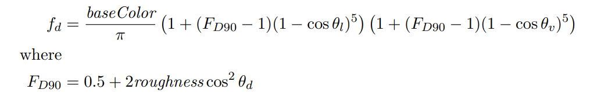

Lambertian Diffuse
例如假设有一束光达到一个白色木板上，并且该白色木板不吸收热辐射，那么白色木板应该反射多少光（能量）出去？显然是100%，因为假定了白色木板不吸收能量，并且木板也不是电介质，没有产生折射， 光必然100%反射到各个方向去了。此时BSDF是多少呢？这就要看白色模板的材质。
假设白色木板是用的Lambertian Diffuse材质，即一束光会均匀地散射到所有方向。
直接搬出Lambertian Diffuse BSDF公式：
\[ f = \frac {ρ_{albedo}}{\pi } \]
其中的\(ρ_{albedo}\)是指diffuse物体的反射率。
这个其实就是3D模型基本都会有的albedo纹理，是同个东西。例如如果给白色木板画个纹理，那就是一张纯白色的图片，反射率为(1.0, 1.0, 1.0)，表示打到木板上的光线全部反射，不吸收。
当albedo不等于(1.0, 1.0, 1.0)时，例如(0.5, 0.5, 0.5)，说明木板吸收了光束一半的辐射；当albedo等于(0,0,0)时，木板完全不反射，光的能量全部吸收掉。
至于为什么要除以π才是diffuse物体的BSDF，得从渲染方程说起。
（在我的这篇 渲染基础理论的介绍 文章中有介绍相关的公式推导 ）
先看下wiki里的渲染方程：

这公式是在说，已知出射方向\(w_o\)，那么把被渲染的点(shading point)自身沿着\(w_o\)方向发射的radiance部分、以及接收到的radiance并且要反射出去的部分，通通加起来，就是总共的要沿着\(w_o\)发射出去的radiance。
再看我的无伤大雅的简化版（去掉了波长变量以及时间变量）：
\[ L_{o}(p, \omega _{o}) = L_{e}(p, \omega _{o}) + \int _{\Omega }f(p, \omega _{o}, \omega _{i}) L_{i}(p, \omega _{i}) |cos \theta _{i}|d\omega _{i} \]
因为现在讨论的是diffuse材质，没有自发光，可以去掉自发光项；另外把公式改成用spherical angle表达（需要一点立体角的知识），结果如下：
\[ L_{o} = \int _{0 }^{ 2π } \int _{0 }^{ \frac {π}{2} } f(p, \theta ,\phi ) L_{i} (p,\theta ,\phi ) cos\theta sin\theta d\theta d\phi \]
再因为diffuse材质会吧把收到的光线均匀地散射出去，即\(L_i\)不影响后面的反射，同时因为均匀性，f也是个常数，所以右边的积分里，可以把\(L_i\)、f当成常量提到外面去，只关注剩下的积分式：
\[ \int _{0 }^{ 2π } \int _{0 }^{ \frac {π}{2} } cos\theta sin\theta d\theta d\phi \]
这是个可以算出来的式子，结果等于π。于是有：
\[ L_{o} = L_{i} \cdot f \cdot π \]
因为能量要守恒，所以 f必须等于 \( \frac {1}{\pi } \)。但在渲染里既然要模拟光被吸收，使得物体呈现不同的颜色，能量应该是允许不守恒的，那么f应该等于多少呢？答案在上文其实已经给出了：
\[ f = \frac {ρ_{albedo}}{\pi } \]
再搬出那块白色木板，它百分百反射所有光，\(ρ_{albedo} \)为1，所以它的f为 \( \frac {1}{\pi } \)。
（这篇文章也很好地解释了diffuse BSDF公式的推导： Deriving Lambertian BRDF from first principles ）
非Lambertian Diffuse
Lambertian Diffuse直接认为Diffuse材质时完全均匀反射所有光线，然而这个假设过于笼统了。Disney研究了现实世界Diffuse材质后发现，可以用一种更复杂的公式模拟Diffuse，使得Diffuse材质更真实。
它的公式如下：

(from disney的论文)
其中\(\theta _l \)和\(\theta _v \)分别是光线l、视线v与法线n的夹角，\(\theta _d \)是光线l和半程向量h的夹角（h一般为0.5*(v + l) ）。
baseColor就是上一节的\(ρ_{albedo} \)，可见disney的这个公式还是没有脱离上一节的推导的，只是在Lambertian Diffuse的f后面加了一坨计算。
两种Diffuse的实现代码
第一份是从Filament里扒的：
float Fd_Lambert() {
return 1.0 / PI;
}
float F_Schlick(float f0, float f90, float VoH) {
return f0 + (f90 - f0) * pow5(1.0 - VoH);
}
float Fd_Burley(float roughness, float NoV, float NoL, float LoH) {
// Burley 2012, "Physically-Based Shading at Disney"
float f90 = 0.5 + 2.0 * roughness * LoH * LoH;
float lightScatter = F_Schlick(1.0, f90, NoL);
float viewScatter = F_Schlick(1.0, f90, NoV);
return lightScatter * viewScatter * (1.0 / PI);
}
float diffuse(float roughness, float NoV, float NoL, float LoH) {
#if BRDF_DIFFUSE == DIFFUSE_LAMBERT
return Fd_Lambert();
#elif BRDF_DIFFUSE == DIFFUSE_BURLEY
return Fd_Burley(roughness, NoV, NoL, LoH);
#endif
}
// diffuseLobe返回该像素点真正的diffuse color
// pixel.diffuseColor即albedo
vec3 diffuseLobe(const PixelParams pixel, float NoV, float NoL, float LoH) {
return pixel.diffuseColor * diffuse(pixel.roughness, NoV, NoL, LoH);
}
这个是从知乎找的精简版：
float3 Diffuse_Burley_Disney( float3 albedo, float Roughness, float NoV, float NoL, float VoH )
{
float FD90 = 0.5 + 2 * VoH * VoH * Roughness;
float FdV = 1 + (FD90 - 1) * Pow5( 1 - NoV );
float FdL = 1 + (FD90 - 1) * Pow5( 1 - NoL );
return albedo * ( (1 / PI) * FdV * FdL );
}
博主将十分感谢对本文章的任意金额的打赏^_^